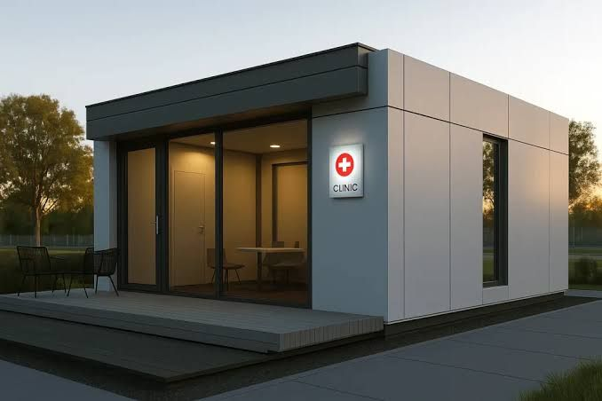

Where this is going
Published openly, including the parts that are behind. Filter by status to see what exists today versus what is still an intention. The pilot is what moves items from one column to the next. Here is how that works.
Published openlyIncluding what is behind
Roadmap items
Core inventory & dashboard
Item catalogue, batch tracking, expiry dates, reorder levels, stock movement history and the live dashboard. The part everything else rests on.
Roles, permissions and audit trail
Four permission levels with per-screen guards, session handling, and an append-only log of every adjustment and export.
Import engine & upload history
CSV and Excel import with column mapping, row-level error reporting, and versioned upload history so any import can be undone.
Finance module & accounting export
Spend, revenue and margin reporting by period and category, plus an export bundle including a Sage-compatible connector.
Forecasting, expiry risk and anomaly detection
Demand forecasting per item, batch-level expiry scoring, refill suggestions and anomaly flags, each with its confidence and inputs on show.
Repeatable ingestion from a live site
Taking a working healthcare facility's inventory, purchase, supplier, batch, expiry, consumption, receipt, adjustment, cost and lead-time records in the format they already exist, and making that import a routine rather than a one-off. Build 01.
Baseline measurement and the pilot scorecard
Physical counts against system records, plus stock-outs, expiry, overstock, inventory value, emergency orders, lead times and discrepancies, all captured before anything is optimised so improvement can be evidenced later. Build 02.
Forecast accuracy tracking
Every prediction stored with its due date and settled against the real count, producing a measured accuracy figure across a named number of medicines over a named number of days. Build 03.
Packaged installer & first-run experience
A single Windows installer that sets up the app and its database together, followed by a setup wizard and optional guided tour. The goal is install-to-useful without a phone call.
Natural-language queries over your own data
Ask a question in plain English and get a number with the records behind it. Working today for common questions; being widened to the long tail.
Multi-site sync and facility comparison
Optional synchronisation between branches with a head-office roll-up, while each site keeps working if the link drops.
Mobile stock counting
A phone-based counting mode with barcode scanning, so the count happens at the shelf instead of on a clipboard and then again at a keyboard.
Supplier catalogues and order sending
Turn a refill suggestion into an actual purchase order and send it, with delivery reconciliation on the way back in.
Scheduled reports by email
The weekly summary and month-end pack delivered automatically to the people who need them, in the format they already use.
Cross-facility redistribution matching
Projected excess at one site matched against projected shortfall at another, with the transfer proposed while both batches are still usable. Build 04.
Reading from national and third-party logistics systems
The same layer-on-top approach applied to an existing central system rather than a spreadsheet. Proving it at facility scale first is what would make that credible.
Dispensing-system integrations
Direct links to common practice-management and dispensing systems so movement is captured without a manual step. Dependent on what partners will open up.
Regional shortage signals
With explicit consent and aggregation, an early-warning picture of supply problems across participating practices. Only if it can be done without exposing any individual site's data.
Linux and macOS builds
The stack is portable; the packaging is not yet. Priority depends on how many early-access practices actually need it.
Foresight should not be a luxury good
Large hospital groups have had demand planning for decades. They have it because they can afford the analysts, not because their problem is harder. A twelve-item facility in a small town faces the same question: what will we need, and when? It simply has none of the support.
That gap is the whole reason Regnum exists. If a piece of software that runs on a five-year-old desktop can close most of it, then the only remaining barrier is whether somebody bothers to build it well.
We intend to.

vision.jpg · 1050×1400
Something missing from this list?
Early-access practices have a direct line to what gets built next. Tell us what your week keeps tripping over.